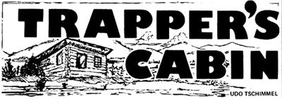
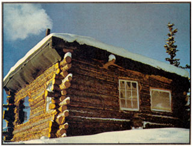
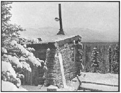
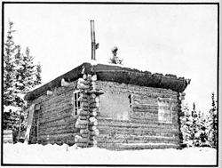

After a couple of years in Montreal, the urge to leave the cramped city had become too powerful . . . so my wife and I decided to head our old delivery van north and work our way up to Canada's Yukon Territory. Once there, we soon found a suitable place for a wilderness home five miles by foot and canoe from the Haines Road. In no time at all we had become good friends with our future neighbors . . . two families, each with small children, who lived in log homes close to the road.
To enter one of these north woods cabins for the first time was-for us-an unforgettable experience. The interior, a single, big, undivided room, reflected the closeness of the people who lived there and the oneness of their lives and activities. An "airtight" heater reigned in the center of the living space, and everything-the large sleeping loft with its wooden access ladder, the homemade chairs and tables-was built of logs.
During those early days up here in the Yukon, we discussed plans for our own cabin. The possibilities were limited-both in design and dimensions-by the fact that we were only two people and couldn't count on any help out in the bush. The conventional gable-roofed structure, for instance, seemed to pose quite a few difficulties (especially with the placement of the heavy ridgepole). As an alternative we considered a dome, which would be quick to build and would give us plenty of light. One look at the cost of the necessary struts and plywood, however, made us forget that plan fast enough.
Then a hiking trip into the mountains gave us the answer. In a sheltered valley we found an old, dilapidated house, built low and small from rather thin logs and topped with a shed roof. What we were looking at was a "trapper's cabin" . . . a structure which combines simplicity, low cost, and the conservation of energy. One man can put up such a building in two or three weeks, even without a chain saw or other power tool. Clearly, this was the dwelling for us.
Our own cabin, we decided, would be 15 feet square on the inside and would be built from about 80 logs averaging 18 feet long and 6 to 9 inches in diameter. ("Averaging" is right . . . the trees we felled weren't very straight and often tapered from 8 inches at the butt to 3 at the other end.)
The biggest timbers we needed were those for the foundation: two logs 20 feet long and 14 inches in diameter. These we peeled and dried for two weeks before treating them with a gallon of wood preserver. We also peeled the logs for the roof but not those for the walls. In spring, when the sap is rising, a tree trunk can be stripped with an axe in 15 minutes . . . but fall was approaching and at that season the same job takes 45 minutes with a drawknife.
The foundation trunks were laid down-parallel, 15 feet apart, and half buried in the ground-to directly support the side walls and to serve as underpinnings for the whole cabin.
Next we cut two notches, 15 feet apart, into each of the foundation timbers to receive the bottom logs for the front and back walls. Since the trunks tapered, each of the notches had to be individually cut to half the thickness of the end of the log it was to hold.
At that point we had a square on the ground: the two foundation logs, half buried, and the bases of the front and back walls dropped into their notches and resting on the earth. We were ready to lay a support for the floor: This consisted of four logs, parallel to the front of the cabin and set into notches cut into the foundation trunks at three-foot intervals.
Construction of our trapper's cabin from that stage on was based on a crafty use of the tapered tree trunks we had to work with. The idea was to alternate the large and small ends of the logs as we built the building's front and back . . . so that each wall would end up level. In the sides, however, all the timbers were set butt forward to make the front wall higher than the back so the lodge's roof would slant. (You can see what I mean by making two stacks of wooden matches, one lot piled with their heads and ends alternated and the other laid up head on head.)
We started this stacking process by notching the front and back logs to receive the first timbers of the side walls (both set, remember, with their butts faced forward). Once in place, the trunks rested on the foundation timbers . . . which was fine except that we could still see daylight where the layers met. So we closed the gaps by running our chain saw horizontally between the mismatched logs several times to knock off the irregularities until no cracks remained. (After that, we often had to go back and deepen the notches on the same logs since a trunk thus smoothed will wind up sitting lower than it had before.) Then we laid a strip of fiberglass on the foundation timber, dropped the slicked-down side-wall log into its final resting place, and anchored it with four seven-inch spikes countersunk into drilled holes.
Following construction continued in the same way: The two side-wall logs were notched and the second timbers for the front and back of the cabin were dropped into place, flattened with the chain saw, chinked with fiberglass, and fastened down with four spikes. And so forth.
Fourteen logs on a side made the structure as tall as we wanted it. At that point the front wall was about ten--and the back approximately six-feet high, with the sides sloping down-front to back-between the two. We stopped at that point, cut out openings for the windows and door, and framed them (provisionally) with a few pieces of timber.
As a precaution against roof sag, we laid two peeled rafter logs parallel to the front and back walls and equidistant from them. Then we added more peeled logs, parallel to the side walls and resting on the two rafters and the front and back of the cabin. Such a "ceiling" can be finished off with roofing paper or 4-mil plastic followed by a layer of earth . . . or with six rows of 2 X 4's nailed across the solid layer of trunks at right angles, covered with boards, and topped with roofing paper. We chose the second method.
The final step in weatherproofing our cabin was made easy by the fiberglass already sandwiched into the walls. Instead of mixing mud and moss to chink and caulk the cracks which remained between the logs, all we had to do was push the fiberglass in here and there with a trowel-tike of wood.
Our cabin's door was made from old lumber but could I just as well have been half-logs held together with boards on the inside. Since we expect the building to settle, we left two inches of space-filled with fiberglass-above the doors and windows.
Then came the floor. We were lucky enough to obtain old tongue-and-groove boards which we laid across supporting logs . . . and there were enough of the planks to make a double layer with roofing paper in between. It was partly this sturdy construction that has made it easy to keep the cabin warm even at 50° below zero.
With a living space only 15 feet square, we had to figure out a very efficient interior design. One of our tricks was to spin four three-and-a-half-foot-long peeled logs upright on the floor and set the bed frame on top of them. This gave us a very large storage area underneath for most of our food (the supplies close to the wall even stay even stay frozen all winter.)
The rest of our furniture is just as simple. A table to thick boards, supported by 2 X 4's and three logs, along one wall and two chairs made of split logs and poles. On two sides of the room-for its whole length and part of its height-we also spiked boards which serve as shelves. The corner opposite the bed accommodates our "airtight" stove.
And that's it. Our cabin ain't fancy, but it's home . . . and it blends beautifully with the woods, mountains, and lakes of the Yukon.
|
 |
 |
 |
|
 |
|
|